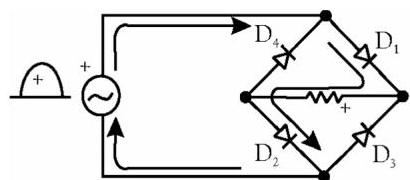
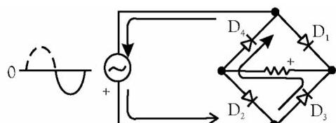

Diode Rectifiers
Half-Wave Diode Rectifier
1.3.1 Principle
A half-wave rectifier is a circuit, which uses one P-N junction diode to convert a.c. voltage into pulsating d.c. voltage. Half-wave rectifier functions using the principle of unidirectional conduction of semiconductor junction diode.
1.3.2 Circuit
The circuit of half-wave rectifier consists of a single diode in series with a load resistor as shown in Fig. 1.16 (b). The input to the half-wave rectifier is supplied from the $50\mathrm{Hz}$ a.c. supply, whose waveform is shown in Fig. 1.16 (a).
1.3.3 Working
The working of a half-wave rectifier circuit may be studied by considering the positive and negative half cycles of the a.c. input voltage separately.
- Positive Half Cycle: During the positive half cycle of the a.c. input voltage, the diode is forward biased and conducts for all instantaneous voltages greater than the offset voltage (0.7 V for silicon and 0.3 V for germanium diodes). However, for all practical purposes, we assume that the diode is forward biased, whenever the a.c. input voltage goes above zero. While conducting, the diode acts as a short-circuit, so that the circuit current flows and produces a voltage across the load resistor $(\mathbb{R}_{\mathrm{L}})$. The voltage produced across the load resistor has the same shape as that of the positive input half cycle of a.c. input voltage as shown in Fig. 1.16 (c). The waveform of diode current (which is equal to the load current) is also shown in Fig. 1.16 (c).
- Negative Half Cycle: During the negative half-cycle of the a.c. input voltage, the diode is reverse biased and hence it does not conduct. Thus there is no current flow or voltage drop across load resistor $\mathbf{R}_{\mathrm{L}}$ i.e., $\mathrm{i_D} = 0$ and $\mathrm{V}_{\mathrm{O}} = 0$. The net result is that only the positive half cycle of the a.c. input voltage appears across $\mathbf{R}_{\mathrm{L}}$. It means that only the positive half cycle of the a.c. input voltage is utilized for delivering a.c. power.
It is evident that the output voltage $(\mathrm{V}_{\mathrm{O}})$ is not a steady d.c. but it is a pulsating d.c. wave having a ripple frequency equal to the input voltage frequency. It will be interesting to know that we can see the waveform of output voltage on an oscilloscope connected across $\mathbf{R}_{\mathrm{L}}$. If we measure the output voltage (or output current) by a d.c. meter, it will indicate some average positive value for both voltage and current.
1.3.4 Output Waveform
Fig. 1.17 shows the output waveform of the half-wave rectifier. The circuit generates only one-half cycle of the a.c. input voltage at output, therefore it is popularly known as a half-wave rectifier.
1.3.5 Device Parameters
Average Values of Output Voltage and Load Current
The instantaneous value of the sinusoidal a.c. input voltage is given by the relation,
Now let $\mathrm{I}_{\mathrm{m}} =$ Maximum value of diode current or load current. It is the current through the resistor $\mathbf{R}_{\mathrm{L}}$.
$\mathrm{V_{dc}} =$ Average or d.c. value of output (or load) voltage across the load resistor, and
$\mathrm{I}_{\mathrm{dc}} =$ Average or d.c. value of load current.
The average or d.c. value of the output voltage is given by the relation,
The above expression indicates that the average or d.c. value of the output voltage is 31.8 per cent of the maximum a.c. input voltage.
Mathematically, the average or d.c. value of load current is given by,
-
(ii) Form Factor (F): It is the ratio of rms value of maximum load current to average value of maximum load current.
$$F = (\text{rms value of } I_m) / (\text{average value of } I_m) = 0.5 \, I_m / 0.318 \, I_m = 1.57$$
- (iii) Peak Inverse Voltage: It is the maximum voltage across the diode in the reverse direction. Its value in present case is $V_m$.
-
(iv) Efficiency: It is the ratio of output power to total input power supplied to the circuit.
$$\eta = P_{out} / P_{in}$$$$\eta\% = \left[(I_{dc}^2 R_L) / I_{rms}^2 (R_d + R_L)\right] \times 100$$By neglecting $\mathbf{r}_{\mathrm{d}}$, $\eta = 40.6\%$. Hence, the maximum possible efficiency of half-wave rectifier is $40.6\%$.
-
(v) Ripple factor $(\gamma)$: It is the ratio of voltage (or ripple current) in output to d.c. voltage component in output (or current).
$$\gamma = \sqrt{\left(\frac{I_{\mathrm{m}} / 2}{I_{\mathrm{m}} / \pi}\right)^{2} - 1} = 1.21$$Thus the ripple factor of half-wave rectifier is 1.21.
Full-Wave Diode Rectifier
1.4.1 Principle
A full-wave rectifier is a circuit, which allows a unidirectional current to flow through the load during the entire input cycle as shown in Fig. 1.19. The result of full-wave rectification is a d.c. output voltage that pulsates every half-cycle of the input.
1.4.2 Circuit
The circuit diagram of a full wave rectifier is shown in Fig. 1.20. The input ac signal $\mathrm{V}_{\mathrm{ac}}$ is taken by a transformer of primary voltage $\mathrm{V}_{\mathrm{I}}$ and secondary voltage $\mathrm{V}_{\mathrm{S}}$. The center-tap on the secondary winding of a transformer is, usually, taken as the ground or zero voltage reference point. The voltage between the center-tap and either end of the secondary winding is half of the secondary voltage, i.e., $\mathrm{V}_{\mathrm{S}} = \mathrm{V}_{\mathrm{S}} / 2$.
1.4.3 Working
The working of a center-tapped full-wave rectifier circuit may be discussed as follows:
(i) Positive Half-Cycle
During the positive input half-cycle, the polarities of the secondary voltage are as shown in Fig. 1.21 (a). This forward biases the diode $\mathrm{D}_1$ and reverse-biases the diode $\mathrm{D}_2$. As a result of this, the diode $\mathrm{D}_1$ conducts some current whereas the diode $\mathrm{D}_2$ is OFF.
(ii) Negative Half-Cycle
During the negative input half-cycle, the polarities of the secondary voltage are as shown in Fig. 1.21 (b). This reverse-biases the diode $\mathrm{D}_1$ and forward-biases the diode, $\mathrm{D}_2$. As a result of this, the diode $\mathrm{D}_1$ is OFF and the diode $\mathrm{D}_2$ conducts some current.
Thus, it may be noted that current through the load flows in the same direction, during both the positive and negative half-cycle of input signal. Therefore, the output voltage developed across load $R_{\mathrm{L}}$ is full-wave rectified d.c. voltage as shown in Fig. 1.22.
1.4.4 Output Waveform
1.4.5 Device Parameters
Average Values
We know that the equation for the voltage across each half of the secondary winding, $\mathrm{V}_{\mathrm{S}} = \mathrm{V}_{\mathrm{m}}\sin \omega t = \mathrm{V}_{\mathrm{m}}\sin \theta$.
From the above relation it is noted that the average value of a full-wave rectifier is $0.636\mathrm{V}_{\mathrm{m}}$ and is as shown in Fig. 1.23 (a), and this value is twice that of a half-wave rectifier.
-
(ii) Peak Inverse Voltage of a Diode: At a given half-cycle, two diodes are reverse biased and have a maximum reverse voltage equal to the maximum secondary voltage $(\mathrm{V}_{\mathrm{m}})$. The total reverse voltage across the diode $\mathrm{D}_2$ is: $= V_{\mathrm{m}} - (-V_{\mathrm{m}}) = 2V_{\mathrm{m}}$. Therefore, Peak-inverse voltage of each diode in a center-tapped full-wave rectifier,
$$\mathrm {P I V} = 2 \mathrm {V} _ {\mathrm {m}}$$
-
(iii) Efficiency:
$$\eta = \frac {0 . 8 1 2}{1 + \frac {R _ {\mathrm {d}}}{R _ {\mathrm {L}}}} \tag {1.9}$$Efficiency will be maximum if $R_L \gg R_d$. Thus $\eta_{\max} = 0.812$ or $81.2\%$. From the above, it is evident that maximum efficiency of a full-wave rectifier is twice that of half-wave rectifier.
-
(iv) Ripple factor:
$$\gamma = \sqrt {\left(\frac {I _ {m w}}{I _ {d c}}\right) ^ {2} - 1} = \sqrt {\left(\frac {I _ {m} / \sqrt {2}}{2 I _ {m} / \pi}\right) ^ {2} - 1} = 0. 4 8 2 \tag {1.10}$$From the above result it is evident that ripple factor of a full-wave rectifier is 0.482 and is much smaller than that of a half-wave rectifier. Because of this reason, full-wave rectifier is used more commonly in actual practice.
1.4.6 Advantages and Disadvantages of Center-tapped Full-wave Rectifier
Advantages
- The d.c. output voltage and load current values are twice than those of a half-wave rectifier.
- The ripple factor is much less (0.482) than that of half-wave rectifier (1.21).
- The efficiency is twice that of half-wave rectifier. For a full-wave rectifier, the maximum possible value of efficiency is 81.2%, while that of half-wave rectifier is 40.6%.
Disadvantages
- The output voltage is half of the secondary voltage.
- The peak-inverse voltage (PIV) of a diode is twice that of the diode used in the half-wave rectifier.
- It is expensive to manufacture a center-tapped transformer, which produces equal voltages on each half of the secondary winding.
Other Full-Wave Circuits (Bridge Rectifier)
1.5.1 Bridge Rectifier
It is most frequently used rectifier circuit for electronic dc power supplies. It uses four diodes connected across the main supply.
(1) Circuit Diagram
The circuit diagram of bridge rectifier is shown in Fig. 1.24.

(2) Working
-
Positive Half-Cycle: During positive half-cycle of input voltage, as shown in Fig. 1.25 (a), the diodes $\mathrm{D}_1$ and $\mathrm{D}_2$ are forward biased and conduct some current in the direction as indicated in the figure. A voltage is developed across the resistor $\mathbf{R}_{\mathrm{L}}$ due to the current flow through it. The voltage waveform looks like the positive half of the input cycle. At this time the diodes $\mathrm{D}_3$ and $\mathrm{D}_4$ are reverse biased.

Figure 1.25 (a) -
Negative Half-Cycle: When the input voltage is negative as shown in Fig. 1.25 (b), the diodes $\mathrm{D}_3$ and $\mathrm{D}_4$ are forward biased and conduct some current in the same direction through $\mathbf{R}_{\mathrm{L}}$ as during the positive half-cycle. During this time, the diodes $\mathrm{D}_1$ and $\mathrm{D}_2$ are reverse biased. As a result of this action, a full-wave rectified output voltage is developed across the resistance $\mathbf{R}_{\mathrm{L}}$.

Figure 1.25 (b)
(3) Device parameters
-
(i) Average Values:
$$V _ {d c} = \frac {2 V _ {m}}{\pi} \text { and } I _ {d c} = \frac {2 I _ {m}}{\pi} = \frac {2 V _ {m}}{\pi \cdot R _ {L}} \tag {1.11}$$where $V_{m} =$ Maximum value of secondary voltage.
-
(ii) Peak Inverse Voltage of a Diode: At a given half-cycle, two diodes are reverse biased and have a maximum reverse voltage equal to the maximum secondary voltage $(\mathrm{V}_{\mathrm{m}})$. Thus, peak-inverse voltage of a diode in a bridge rectifier, is
$$\mathrm{PIV} = \mathrm{V}_{\mathrm{m}}$$
(4) Advantages and Disadvantages of Bridge Rectifier
Advantages
- It can be used in applications allowing floating output terminals i.e., no output terminal is grounded.
- The transformer is less costly as it is required to provide only half the voltage of an equivalent center-tapped transformer used in a full wave rectifier circuit.
- No center-tap is required on the transformer.
Disadvantages
It has only one disadvantage that it uses four diodes as compared to two diodes for center-tapped full-wave rectifier. But ready availability of low cost silicon diodes have made it more economical despite its requirement of four diodes. Besides this, PIV rating required of the diodes, in a bridge rectifier, is only half of that for a center-tapped full-wave rectifier. This is a great advantage, which offsets the disadvantage of using four diode instead of two in a full-wave rectifier circuit.
1.5.2 Comparison of Rectifiers
| S. No. | Item | Half-wave | Center-tapped Full-wave | Bridge Full-wave |
|---|---|---|---|---|
| 1. | Number of diodes | 1 | 2 | 4 |
| 2. | Peak-inverse voltage of diode | Vin | 2 Vin | Vin |
| 3. | D.C. Output voltage | 0.318 Vin | 0.636 Vin | 0.636 Vin |
| 4. | Ripple factor | 1.21 | 0.482 | 0.482 |
| 5 | Efficiency (%) | 40.6% | 81.2% | 81.2% |